<title>Moyu 开发历程</title>
<meta name="claude:viewport-fit-sides" content="cover">
<link rel="preconnect" href="https://fonts.googleapis.com">
<link rel="preconnect" href="https://fonts.gstatic.com" crossorigin>
<link rel="stylesheet" href="https://fonts.googleapis.com/css2?family=Barlow:wght@300;400;500;600&family=IBM+Plex+Mono:wght@400;500&family=Noto+Sans+SC:wght@400;500;700&display=swap">
<style>
/* Layout: a 16:9 "video" stage (fixed 1280×720 canvas, scaled to fit) with player controls, then the storyboard as a readable chapter list.
   The stage keeps one light look (it is the film); the page around it follows the viewer's theme.
   Palette from the repo's dev-time charts: ink, teal, slate blue, ochre on warm paper. */
:root{
  --bg:#F7F6F2; --fg:#223936; --muted:#5F6B67; --line:#DFE3DC; --accent:#287F7D; --panel:#FFFFFF; --track:#D6DCD6;
  --s-bg1:#F6F4EF; --s-bg2:#E5EBEE; --s-ink:#223936; --s-muted:#5C6964; --s-teal:#287F7D; --s-blue:#647F9F;
  --s-ochre:#AA744D; --s-ochre2:#DDBFA5; --s-line:#D3DAD6; --s-card:rgba(255,255,255,.74); --s-white:#FFFFFF;
  --f-sans:"Bahnschrift","Barlow","Microsoft YaHei UI","Microsoft YaHei","PingFang SC","Noto Sans SC",system-ui,sans-serif;
  --f-mono:"IBM Plex Mono","Cascadia Mono",Consolas,"Microsoft YaHei UI","Noto Sans SC",monospace;
}
@media (prefers-color-scheme: dark){
  :root:not([data-theme="light"]){ --bg:#121817; --fg:#E2EAE7; --muted:#9AA8A3; --line:#28332F; --accent:#62B3AE; --panel:#1A2220; --track:#33403C; color-scheme:dark }
}
:root[data-theme="dark"]{ --bg:#121817; --fg:#E2EAE7; --muted:#9AA8A3; --line:#28332F; --accent:#62B3AE; --panel:#1A2220; --track:#33403C; color-scheme:dark }

body{ background:var(--bg); color:var(--fg); font-family:var(--f-sans); }
.wrap{ max-width:1120px; margin:0 auto; padding-block:36px 56px; padding-left:max(16px, env(safe-area-inset-left, 0px)); padding-right:max(16px, env(safe-area-inset-right, 0px)); display:grid; gap:28px; }
.head{ display:grid; gap:8px; }
.eyebrow{ margin:0; font:500 12px/1.4 var(--f-mono); letter-spacing:.1em; color:var(--accent); text-transform:uppercase; }
h1{ margin:0; font-size:clamp(26px, 4vw, 36px); line-height:1.2; font-weight:600; text-wrap:balance; }
.lede{ margin:0; max-width:65ch; font-size:16px; line-height:1.65; color:var(--muted); }

/* Player */
.player{ display:grid; gap:10px; }
.player:fullscreen{ background:#000; place-content:center; padding:16px; }
.player:fullscreen .stage{ width:min(calc(100vw - 32px), calc((100vh - 90px) * 16 / 9)); border-radius:0; }
.player:fullscreen .controls{ color:#E2EAE7; --track:#3A4542; --accent:#62B3AE; --bg:#000; }
.stage{ position:relative; width:100%; aspect-ratio:16/9; max-width:100%; overflow:hidden; border-radius:14px; cursor:pointer;
  background:linear-gradient(180deg, var(--s-bg1) 0%, var(--s-bg2) 100%); box-shadow:0 1px 0 rgba(34,57,54,.05), 0 22px 50px -30px rgba(34,57,54,.45); outline:none; }
.stage:focus-visible{ box-shadow:0 0 0 3px var(--accent); }
.canvas{ position:absolute; left:0; top:0; width:1280px; height:720px; transform-origin:0 0; color:var(--s-ink); pointer-events:none; font-family:var(--f-sans); }
.controls{ display:flex; align-items:center; gap:12px; }
.btn{ flex:none; width:40px; height:40px; display:grid; place-items:center; border-radius:50%; border:1px solid var(--line); background:var(--panel); color:var(--fg); cursor:pointer; }
.btn:hover{ border-color:var(--accent); color:var(--accent); }
.btn:focus-visible{ outline:2px solid var(--accent); outline-offset:2px; }
.btn svg{ width:18px; height:18px; fill:currentColor; }
.time{ flex:none; font:500 13px/1 var(--f-mono); font-variant-numeric:tabular-nums; color:var(--muted); min-width:92px; }
.scrub{ position:relative; flex:1; min-width:0; height:28px; display:flex; align-items:center; }
.scrub input{ -webkit-appearance:none; appearance:none; width:100%; height:28px; margin:0; background:transparent; cursor:pointer; position:relative; z-index:1; }
.scrub input::-webkit-slider-runnable-track{ height:4px; border-radius:2px; background:linear-gradient(to right, var(--accent) var(--p,0%), var(--track) var(--p,0%)); }
.scrub input::-webkit-slider-thumb{ -webkit-appearance:none; width:14px; height:14px; margin-top:-5px; border-radius:50%; background:var(--accent); border:2px solid var(--bg); }
.scrub input::-moz-range-track{ height:4px; border-radius:2px; background:var(--track); }
.scrub input::-moz-range-progress{ height:4px; border-radius:2px; background:var(--accent); }
.scrub input::-moz-range-thumb{ width:12px; height:12px; border-radius:50%; background:var(--accent); border:2px solid var(--bg); }
.scrub input:focus-visible{ outline:2px solid var(--accent); outline-offset:2px; border-radius:4px; }
.ticks{ position:absolute; inset:0; pointer-events:none; z-index:2; }
.ticks i{ position:absolute; top:10px; width:2px; height:8px; border-radius:1px; background:var(--bg); opacity:.9; }
.narrow-hint{ display:none; margin:0; font-size:13px; color:var(--muted); }
@media (max-width:640px){ .narrow-hint{ display:block; } .time{ min-width:0; } }

/* Storyboard */
.board{ display:grid; gap:14px; }
.board h2{ margin:0; font-size:20px; font-weight:600; }
.chapters{ list-style:none; margin:0; padding:0; display:grid; grid-template-columns:repeat(auto-fill, minmax(min(100%, 330px), 1fr)); gap:10px; }
.chapters button{ width:100%; height:100%; text-align:left; display:grid; grid-template-columns:auto 1fr; column-gap:12px; row-gap:4px; align-content:start;
  padding:12px 14px; border-radius:10px; border:1px solid var(--line); background:var(--panel); color:var(--fg); font:inherit; cursor:pointer; }
.chapters button:hover{ border-color:var(--accent); }
.chapters button:focus-visible{ outline:2px solid var(--accent); outline-offset:2px; }
.chapters button[aria-current="true"]{ border-color:var(--accent); box-shadow:inset 3px 0 0 var(--accent); }
.chapters .ts{ grid-row:span 2; font:500 13px/1.5 var(--f-mono); color:var(--accent); font-variant-numeric:tabular-nums; }
.chapters .ct{ font-size:15px; font-weight:600; line-height:1.4; }
.chapters .cd{ font-size:13.5px; line-height:1.6; color:var(--muted); min-width:0; }
.source{ margin:0; font-size:13px; line-height:1.7; color:var(--muted); max-width:80ch; }
.source code{ font-family:var(--f-mono); font-size:12.5px; }

/* ---------- Stage elements (1280×720 coordinates) ---------- */
.scene{ position:absolute; inset:0; opacity:0; }
.a{ position:absolute; margin:0; }
.eb{ left:80px; top:60px; font:500 15px/1 var(--f-mono); letter-spacing:.09em; color:var(--s-teal); text-transform:uppercase; }
.h{ left:80px; top:86px; font-size:48px; line-height:1.15; font-weight:600; letter-spacing:-.005em; white-space:nowrap; }
.sub{ left:80px; top:158px; width:1060px; font-size:21px; line-height:1.55; color:var(--s-muted); }
.vp{ position:absolute; overflow:hidden; border-radius:10px; background:#D9DCDA; box-shadow:0 1px 0 rgba(34,57,54,.06), 0 24px 44px -24px rgba(34,57,54,.42); }
.ly{ position:absolute; inset:0; }
.ly img{ width:100%; height:100%; object-fit:cover; display:block; }
.chip{ position:absolute; right:10px; bottom:10px; padding:5px 9px; border-radius:6px; background:rgba(255,255,255,.92); font:500 14px/1 var(--f-mono); color:var(--s-ink); }
.chip.l{ right:auto; left:10px; top:10px; bottom:auto; }
.chip.r{ top:10px; bottom:auto; }
.vtag{ position:absolute; left:10px; top:8px; font:400 12px/1 var(--f-mono); color:rgba(34,57,54,.55); z-index:3; }
.cap{ font-size:17px; line-height:1.5; color:var(--s-muted); }
.mono{ font-family:var(--f-mono); }
.teal{ color:var(--s-teal); } .ochre{ color:var(--s-ochre); } .muted{ color:var(--s-muted); }
.num{ font-variant-numeric:tabular-nums; }

/* S1 title */
.fish{ position:absolute; width:128px; height:128px; border-radius:28px; background:#0D0D0F; overflow:hidden; box-shadow:0 18px 36px -18px rgba(13,13,15,.6); }
.fish img{ width:100%; height:100%; display:block; image-rendering:pixelated; }
.hero{ left:80px; top:318px; font-size:56px; line-height:1.15; font-weight:600; white-space:nowrap; }
.lead{ left:80px; top:404px; font-size:27px; color:var(--s-muted); }
.lead b{ color:var(--s-teal); font-weight:500; }
.foot{ left:80px; top:620px; font:400 15px/1.4 var(--f-mono); color:var(--s-muted); }
.days{ left:900px; top:148px; width:300px; list-style:none; padding:0 0 0 22px; border-left:2px solid var(--s-line); display:grid; gap:0; }
.days li{ position:relative; height:70px; }
.days li::before{ content:""; position:absolute; left:-29px; top:5px; width:12px; height:12px; border-radius:50%; background:var(--s-bg1); border:2px solid var(--s-teal); }
.days b{ display:block; font:500 16px/1.2 var(--f-mono); color:var(--s-teal); }
.days span{ display:block; margin-top:6px; font-size:18px; line-height:1.35; }

/* stats */
.stat{ position:absolute; display:flex; align-items:baseline; gap:10px; }
.stat b{ font-size:34px; font-weight:600; color:var(--s-teal); font-variant-numeric:tabular-nums; white-space:nowrap; }
.stat span{ font-size:16px; color:var(--s-muted); white-space:nowrap; }

/* S3 ribbon + cards */
.ribbon{ left:80px; top:262px; height:46px; display:flex; align-items:stretch; border:1px solid var(--s-line); border-radius:8px; background:var(--s-card); overflow:hidden; }
.ribbon .tab{ display:flex; align-items:center; padding:0 18px; font-weight:600; font-size:17px; color:var(--s-teal); border-right:1px solid var(--s-line); }
.ribbon .cell{ display:flex; align-items:center; padding:0 18px; font:400 15px/1 var(--f-mono); color:var(--s-ink); border-right:1px solid var(--s-line); background-color:rgba(40,127,125,0); }
.ribbon .cell:last-child{ border-right:0; }
.ribbon .cell.dim{ color:var(--s-muted); }
.card{ position:absolute; top:340px; width:262px; height:262px; padding:22px 22px 0; box-sizing:border-box; border-radius:12px; background:var(--s-card); border:1px solid var(--s-line); display:flex; flex-direction:column; gap:10px; }
.card .pn{ font:500 14px/1 var(--f-mono); color:var(--s-muted); letter-spacing:.04em; }
.card .gn{ font-size:28px; font-weight:600; line-height:1.15; }
.card .gd{ font-size:16px; line-height:1.5; color:var(--s-muted); }
.card .gb{ margin-top:auto; padding:12px 0 18px; border-top:1px solid var(--s-line); font-size:16px; color:var(--s-ochre); }

/* S4 games */
.prog{ left:1040px; top:62px; width:160px; text-align:right; font:500 15px/1 var(--f-mono); color:var(--s-muted); }
.side{ left:920px; width:280px; }
.gp{ top:178px; font:500 14px/1 var(--f-mono); color:var(--s-muted); letter-spacing:.06em; }
.gt{ top:202px; font-size:36px; line-height:1.15; font-weight:600; }
.gdesc{ top:258px; font-size:18px; line-height:1.6; color:var(--s-muted); }
.glab{ top:400px; font:500 13px/1 var(--f-mono); color:var(--s-muted); letter-spacing:.08em; }
.gstate{ top:424px; font-size:22px; line-height:1.4; display:flex; gap:10px; align-items:baseline; }
.gstate::before{ content:""; flex:none; width:10px; height:10px; border-radius:50%; background:currentColor; transform:translateY(-2px); }
.gstate.play{ color:var(--s-teal); }
.gstate.boss{ color:var(--s-ochre); }
.gtime{ top:540px; display:flex; align-items:baseline; gap:8px; }
.gtime b{ font-size:44px; font-weight:600; color:var(--s-ink); font-variant-numeric:tabular-nums; }
.gtime span{ font-size:16px; color:var(--s-muted); }
.gtime-note{ top:596px; font-size:15px; color:var(--s-muted); }
.key{ position:absolute; width:96px; height:104px; border-radius:16px; background:#FFFFFF; box-shadow:0 7px 0 #C6CDC9, 0 18px 30px -10px rgba(20,30,28,.45);
  display:flex; flex-direction:column; align-items:center; justify-content:center; gap:2px; z-index:4; }
.key b{ font:500 52px/1 var(--f-mono); color:var(--s-ink); height:48px; }
.key span{ font-size:13px; color:var(--s-muted); }
.flash{ position:absolute; border-radius:10px; background:rgba(255,255,255,.9); z-index:3; }

/* S5 workflow */
.node{ position:absolute; top:262px; width:170px; height:146px; box-sizing:border-box; padding:16px 16px 0; border-radius:12px; border:1px solid var(--s-line);
  background-color:rgba(255,255,255,.74); color:var(--s-ink); display:flex; flex-direction:column; gap:8px; }
.node .nn{ font:500 13px/1 var(--f-mono); opacity:.7; }
.node .nt{ font-size:19px; font-weight:600; line-height:1.25; }
.node .nd{ font-size:14px; line-height:1.5; opacity:.8; }
.flowline{ left:165px; top:431px; width:950px; height:2px; background:var(--s-line); }
.flowfill{ left:165px; top:431px; width:950px; height:2px; background:var(--s-teal); transform-origin:0 50%; }
.dot{ left:158px; top:425px; width:14px; height:14px; border-radius:50%; background:var(--s-teal); box-shadow:0 0 0 5px rgba(40,127,125,.18); }
.ctitle{ font:500 14px/1 var(--f-mono); color:var(--s-muted); letter-spacing:.06em; }
.brow{ position:absolute; display:flex; align-items:center; gap:12px; height:30px; }
.brow .bl{ flex:none; font-size:17px; color:var(--s-ink); text-align:right; }
.brow .bar{ flex:none; display:block; height:18px; border-radius:3px; transform-origin:0 50%; }
.brow .bv{ flex:none; font-size:17px; font-weight:600; font-variant-numeric:tabular-nums; }

/* S6 wipe */
.divider{ position:absolute; top:0; left:0; width:3px; height:100%; margin-left:-1px; background:#FFFFFF; box-shadow:0 0 12px rgba(0,0,0,.35); z-index:2; }
.quote{ left:80px; top:84px; font-size:46px; line-height:1.2; font-weight:600; white-space:nowrap; }

/* S7 rounds */
.item{ position:absolute; left:80px; width:500px; display:grid; gap:4px; padding-left:22px; }
.item::before{ content:""; position:absolute; left:0; top:12px; width:10px; height:2px; background:var(--s-teal); }
.item b{ font-size:22px; font-weight:600; line-height:1.35; }
.item span{ font-size:16px; line-height:1.5; color:var(--s-muted); }

/* S8 big numbers */
.big{ position:absolute; top:242px; width:330px; display:grid; gap:8px; }
.big b{ font-size:84px; line-height:1; font-weight:600; color:var(--s-teal); font-variant-numeric:tabular-nums; letter-spacing:-.01em; }
.big span{ font-size:18px; line-height:1.5; color:var(--s-muted); }
.icn{ position:absolute; border-radius:10px; overflow:hidden; box-shadow:0 18px 36px -22px rgba(34,57,54,.5); }
.icn img{ display:block; width:100%; height:100%; object-fit:cover; image-rendering:pixelated; }

/* S9 who-found */
.stack{ position:absolute; display:flex; height:18px; border-radius:3px; overflow:hidden; transform-origin:0 50%; }
.stack i{ display:block; height:100%; }
.legend{ position:absolute; display:flex; gap:18px; font-size:15px; color:var(--s-muted); white-space:nowrap; }
.legend i{ display:inline-block; width:12px; height:12px; border-radius:2px; margin-right:6px; vertical-align:-1px; }

/* S10 time */
.sum{ position:absolute; top:614px; width:360px; display:grid; gap:4px; }
.sum b{ font-size:34px; font-weight:600; font-variant-numeric:tabular-nums; }
.sum span{ font-size:15px; color:var(--s-muted); }

/* S11 end */
.center{ left:0; width:1280px; text-align:center; }
</style>

<main class="wrap">
  <header class="head">
    <p class="eyebrow">Moyu · Grasshopper 插件 · 2026.11.01 – 11.08</p>
    <h1>Moyu 是怎么做出来的</h1>
    <p class="lede">一段 92 秒的动画，讲这个插件 8 天里干了什么：先做拓扑优化，再做四个伪装成建筑研究面板的摸鱼小游戏，最后两次审查、两次发布。画面里的图都是仓库里的 Rhino 实机截图，数字来自开发记录。</p>
  </header>

  <section class="player" id="player" aria-label="动画播放器">
    <div class="stage" id="stage" tabindex="0" role="button" aria-label="动画画面，点击播放或暂停">
      <div class="canvas" id="canvas" aria-hidden="true">

        <!-- S1 · title -->
        <div class="scene" data-scene="0,5" data-first>
          <div class="fish" style="left:80px;top:150px">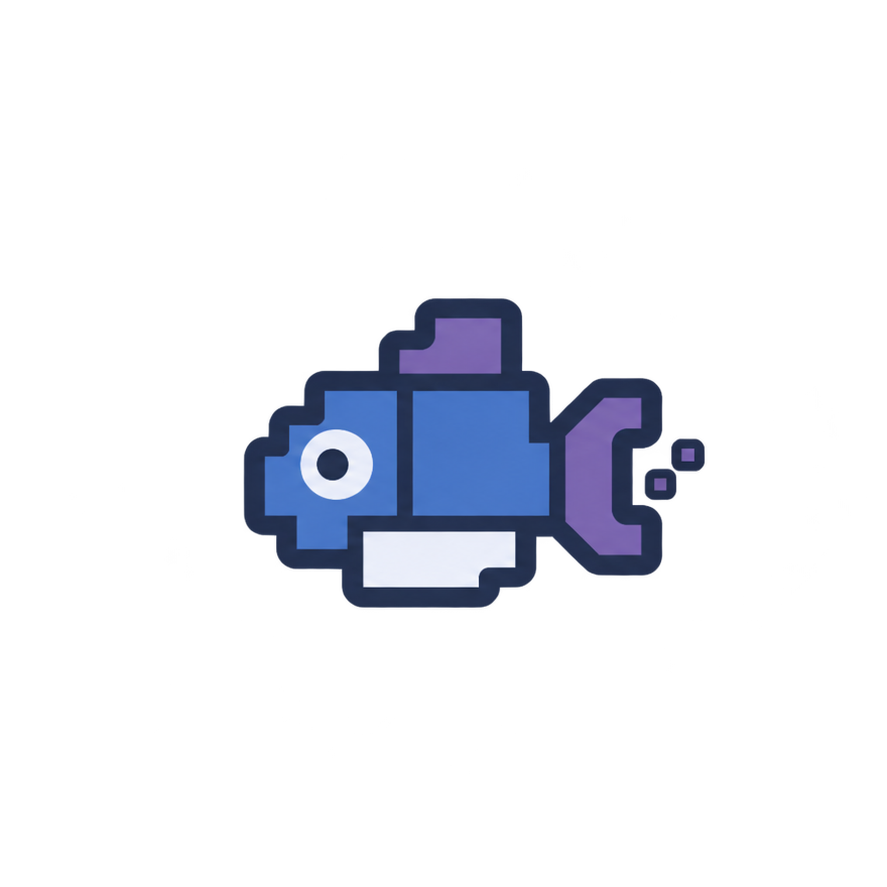</div>
          <p class="a eb" style="top:296px">Moyu · 摸鱼 · Rhino 8 / Grasshopper</p>
          <p class="a hero">一个 Grasshopper 插件的 8 天</p>
          <p class="a lead">拓扑优化 <b>→</b> 四个摸鱼小游戏 <b>→</b> 两次发布</p>
          <p class="a foot">2026.11.01 – 11.08 · 代码、测试和文档几乎全部由 Claude Code 编写</p>
          <ul class="a days">
            <li data-in="0.5" data-dx="18" data-dy="0"><b>11.01</b><span>拓扑优化 · VoxStack · Serpentine</span></li>
            <li data-in="0.8" data-dx="18" data-dy="0"><b>11.02</b><span>Serpentine 收尾</span></li>
            <li data-in="1.1" data-dx="18" data-dy="0"><b>11.03</b><span>Rebound · Swift · 三轮调整</span></li>
            <li data-in="1.4" data-dx="18" data-dy="0"><b>11.04</b><span>审查，发布 1.0.0</span></li>
            <li data-in="1.7" data-dx="18" data-dy="0"><b>11.07</b><span>全仓库交叉审查</span></li>
            <li data-in="2.0" data-dx="18" data-dy="0"><b>11.08</b><span>发布 1.0.1</span></li>
          </ul>
        </div>

        <!-- S2 · topology optimisation -->
        <div class="scene" data-scene="5,15">
          <p class="a eb" data-in="5.2">11.01 · 16:00 – 19:56</p>
          <p class="a h" data-in="5.35">先做正事：拓扑优化</p>
          <p class="a sub" data-in="5.6">画好设计域、荷载和支座，求解器在 Grasshopper 里一步步“长”出受力结构。</p>
          <div class="vp" style="left:80px;top:228px;width:600px;height:320px" data-in="5.9">
            <div class="ly">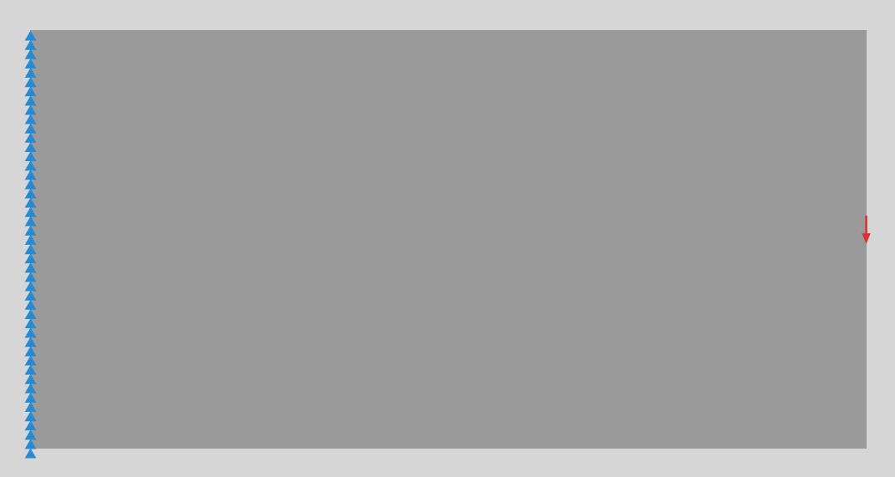<span class="chip">第 0 步</span></div>
            <div class="ly" data-in="7.4" data-dy="0" data-d=".5">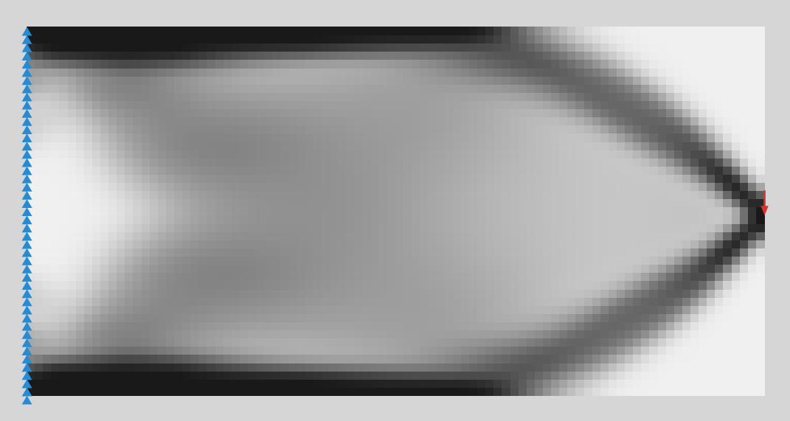<span class="chip">第 5 步</span></div>
            <div class="ly" data-in="8.7" data-dy="0" data-d=".5">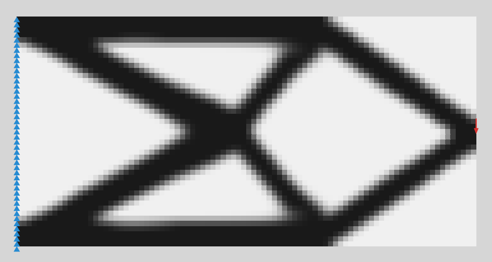<span class="chip">第 20 步</span></div>
            <div class="ly" data-in="10.0" data-dy="0" data-d=".5">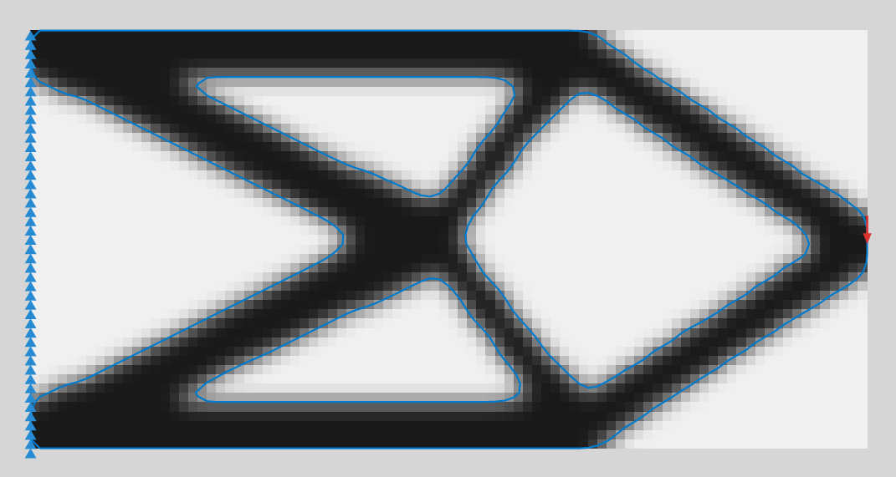<span class="chip">收敛 · 平滑显示</span></div>
            <span class="vtag">Front</span>
          </div>
          <div class="vp" style="left:720px;top:228px;width:470px;height:320px" data-in="6.3">
            <div class="ly">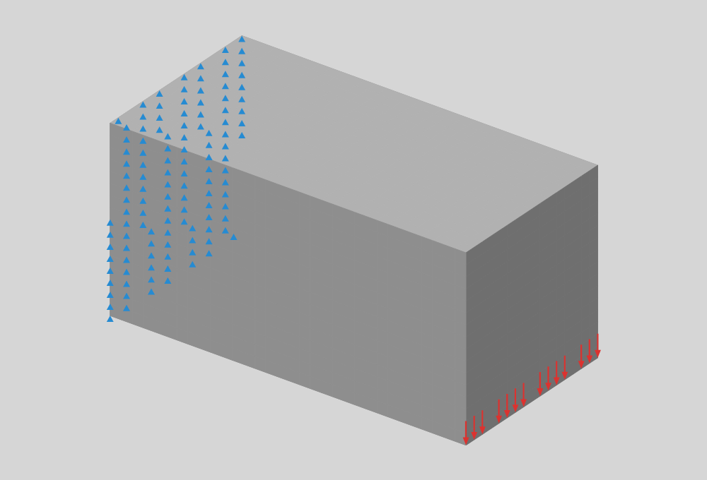<span class="chip">第 0 步</span></div>
            <div class="ly" data-in="8.0" data-dy="0" data-d=".5">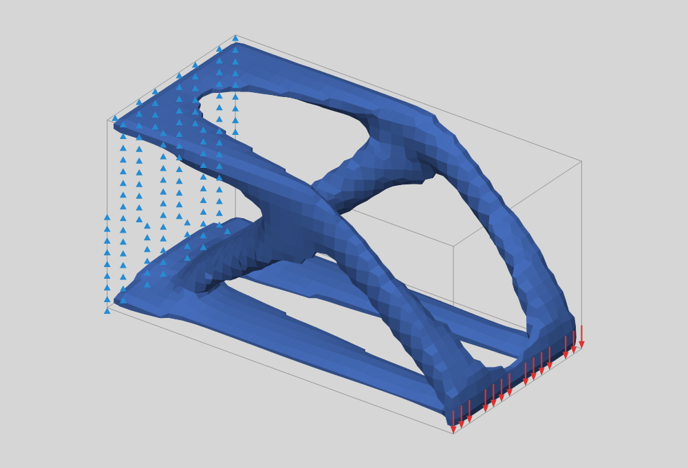<span class="chip">第 10 步</span></div>
            <div class="ly" data-in="9.4" data-dy="0" data-d=".5">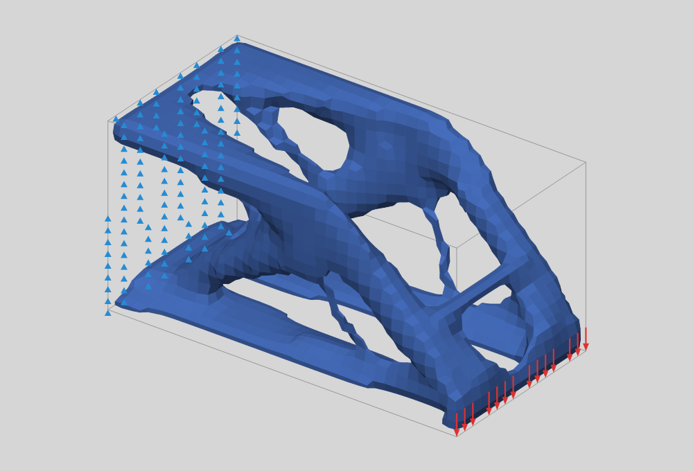<span class="chip">第 30 步</span></div>
            <div class="ly" data-in="10.8" data-dy="0" data-d=".5">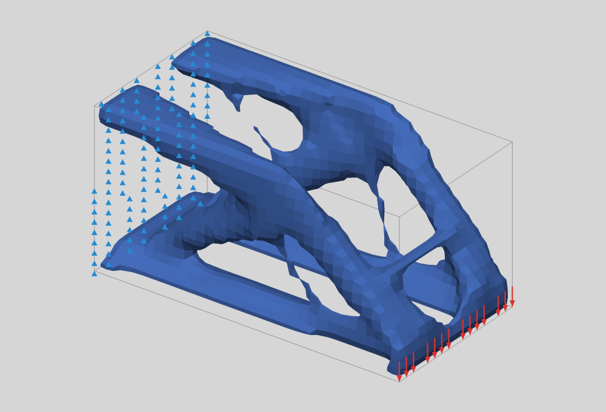<span class="chip">光滑等值面</span></div>
            <span class="vtag">Perspective</span>
          </div>
          <p class="a cap" style="left:80px;top:560px" data-in="6.6">2D 像素 · 7 个组件 · 悬臂梁</p>
          <p class="a cap" style="left:720px;top:560px" data-in="6.9">3D 体素 · 7 个组件 · 多重网格求解</p>
          <div class="stat" style="left:80px;top:618px" data-in="11.6"><b>1 小时 54 分</b><span>Claude 开发用时</span></div>
          <div class="stat" style="left:520px;top:618px" data-in="11.9"><b>14</b><span>个组件</span></div>
          <div class="stat" style="left:760px;top:618px" data-in="12.2"><b>27 分钟</b><span>Rhino 自身崩溃，不计入</span></div>
        </div>

        <!-- S3 · then, games -->
        <div class="scene" data-scene="15,21">
          <p class="a eb" data-in="15.2">11.01 晚上 – 11.03</p>
          <p class="a h" style="font-size:56px" data-in="15.35">然后，顺带摸鱼</p>
          <p class="a sub" style="top:166px" data-in="15.6">四个小游戏直接在 Rhino 视口里玩。每个都伪装成一个建筑研究面板，老板来了按一下 ` 键，屏幕立刻变成正经图纸。</p>
          <div class="a ribbon" data-in="15.9">
            <span class="tab">Moyu</span>
            <span class="cell dim">0 | Examples</span>
            <span class="cell dim">1 | Topo2D</span>
            <span class="cell dim">2 | Topo3D</span>
            <span class="cell" data-lit="16.5">3 | Massing</span>
            <span class="cell" data-lit="16.9">4 | Landscape</span>
            <span class="cell" data-lit="17.3">5 | Facade</span>
            <span class="cell" data-lit="17.7">6 | Section</span>
          </div>
          <div class="card" style="left:80px" data-in="16.5" data-dy="22">
            <span class="pn">3 | MASSING</span><span class="gn">VoxStack 叠楼</span><span class="gd">3D 体素叠方块</span><span class="gb">伪装成：体块研究</span>
          </div>
          <div class="card" style="left:366px" data-in="16.9" data-dy="22">
            <span class="pn">4 | LANDSCAPE</span><span class="gn">Serpentine 蜿蜒</span><span class="gd">曲面上的贪吃蛇</span><span class="gb">伪装成：景观总平面</span>
          </div>
          <div class="card" style="left:652px" data-in="17.3" data-dy="22">
            <span class="pn">5 | FACADE</span><span class="gn">Rebound 回弹</span><span class="gd">按真实砌法排砖的打砖块</span><span class="gb">伪装成：塔楼幕墙立面</span>
          </div>
          <div class="card" style="left:938px" data-in="17.7" data-dy="22">
            <span class="pn">6 | SECTION</span><span class="gn">Swift 雨燕</span><span class="gd">按空格扇翅的飞鸟</span><span class="gb">伪装成：住宅剖面分析</span>
          </div>
          <p class="a cap" style="left:80px;top:636px" data-in="18.6">玩法、画面和老板画面都由 Claude 设计实现，在 Rhino 8 里用真实按键试玩。</p>
        </div>

        <!-- S4 · boss key, four games -->
        <div class="scene" data-scene="21,41">
          <p class="a eb" data-in="21.2">老板键 · Boss key</p>
          <p class="a h" data-in="21.35">按一下 `，游戏变图纸</p>

          <div class="scene" data-scene="21,26.2">
            <p class="a prog">1 / 4</p>
            <div class="vp" style="left:80px;top:170px;width:800px;height:450px">
              <div class="ly">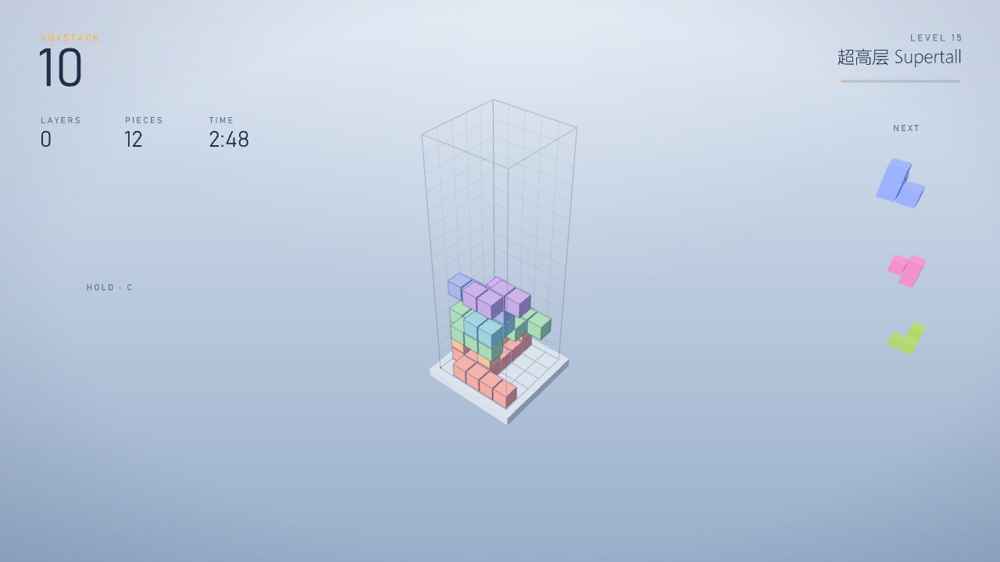</div>
              <div class="ly" data-swap="23.95">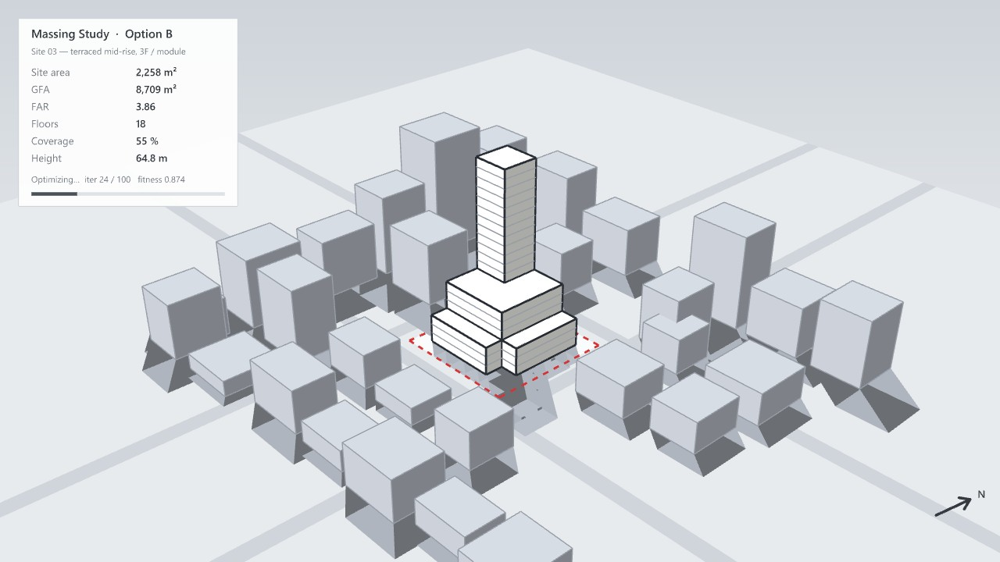</div>
            </div>
            <div class="flash" style="left:80px;top:170px;width:800px;height:450px" data-flash="23.9"></div>
            <div class="key" style="left:432px;top:343px" data-key="23.3"><b>`</b><span>老板键</span></div>
            <p class="a side gp">3 | MASSING</p>
            <p class="a side gt">VoxStack 叠楼</p>
            <p class="a side gdesc">3D 体素版叠方块，铺满一层就消掉。积木可以在 Rhino 里自己画，鼠标拖动转视角。</p>
            <p class="a side glab">画面</p>
            <p class="a side gstate play" data-off="23.9">游戏中</p>
            <p class="a side gstate boss" data-in="23.95" data-dy="8" data-d=".35">老板模式：体块研究</p>
            <p class="a side gtime"><b>83</b><span>分钟</span></p>
            <p class="a side gtime-note">方案、首版、图标与提交</p>
          </div>

          <div class="scene" data-scene="26,31.2">
            <p class="a prog">2 / 4</p>
            <div class="vp" style="left:80px;top:170px;width:800px;height:450px">
              <div class="ly">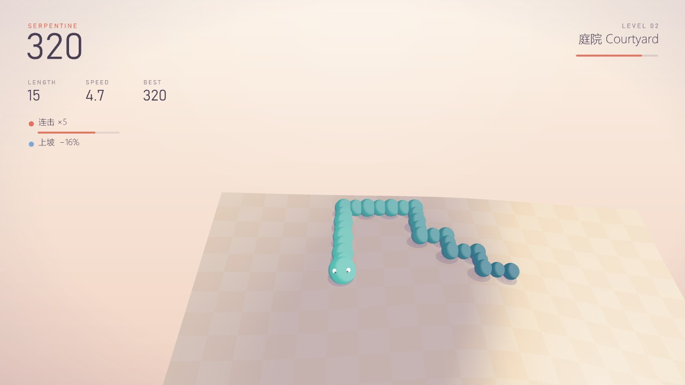</div>
              <div class="ly" data-swap="28.95">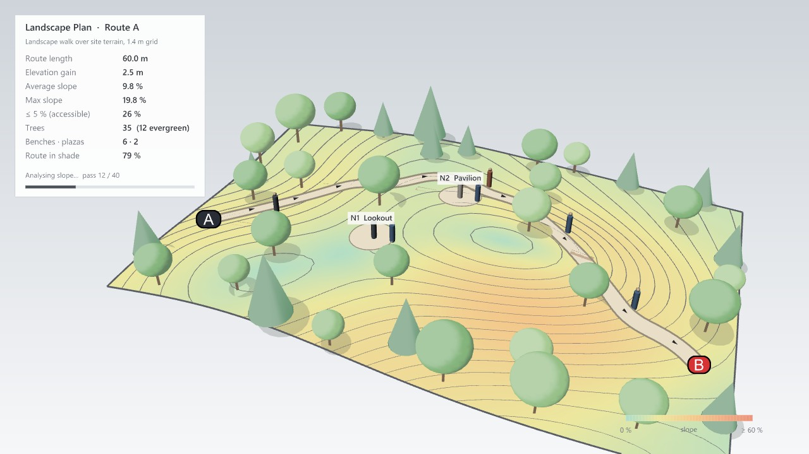</div>
            </div>
            <div class="flash" style="left:80px;top:170px;width:800px;height:450px" data-flash="28.9"></div>
            <div class="key" style="left:432px;top:343px" data-key="28.3"><b>`</b><span>老板键</span></div>
            <p class="a side gp">4 | LANDSCAPE</p>
            <p class="a side gt">Serpentine 蜿蜒</p>
            <p class="a side gdesc">在任意曲面上爬的贪吃蛇，地形就是你自己建的曲面。跟随视角和俯瞰视角两种。</p>
            <p class="a side glab">画面</p>
            <p class="a side gstate play" data-off="28.9">游戏中</p>
            <p class="a side gstate boss" data-in="28.95" data-dy="8" data-d=".35">老板模式：景观总平面</p>
            <p class="a side gtime"><b>70</b><span>分钟</span></p>
            <p class="a side gtime-note">含共用框架和画面重做</p>
          </div>

          <div class="scene" data-scene="31,36.2">
            <p class="a prog">3 / 4</p>
            <div class="vp" style="left:80px;top:170px;width:800px;height:450px">
              <div class="ly">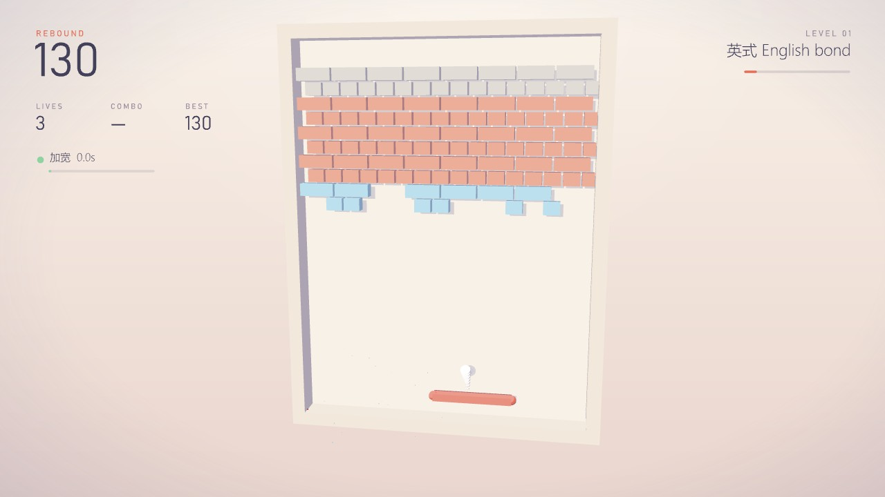</div>
              <div class="ly" data-swap="33.95">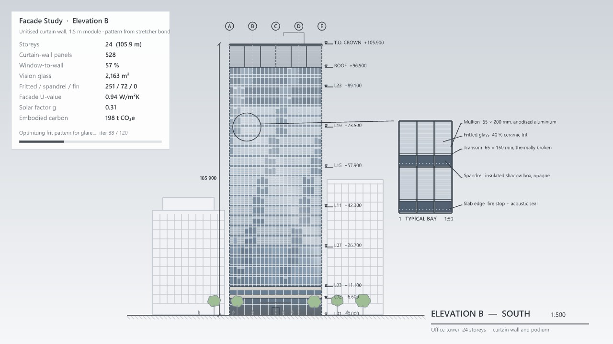</div>
            </div>
            <div class="flash" style="left:80px;top:170px;width:800px;height:450px" data-flash="33.9"></div>
            <div class="key" style="left:432px;top:343px" data-key="33.3"><b>`</b><span>老板键</span></div>
            <p class="a side gp">5 | FACADE</p>
            <p class="a side gt">Rebound 回弹</p>
            <p class="a side gdesc">打砖块。砖墙按真实砌法排列，道具打几次就失效。</p>
            <p class="a side glab">画面</p>
            <p class="a side gstate play" data-off="33.9">游戏中</p>
            <p class="a side gstate boss" data-in="33.95" data-dy="8" data-d=".35">老板模式：塔楼幕墙立面</p>
            <p class="a side gtime"><b>56</b><span>分钟</span></p>
            <p class="a side gtime-note">和 Inkline 一起，两个游戏</p>
          </div>

          <div class="scene" data-scene="36,41" data-last>
            <p class="a prog">4 / 4</p>
            <div class="vp" style="left:80px;top:170px;width:800px;height:450px">
              <div class="ly">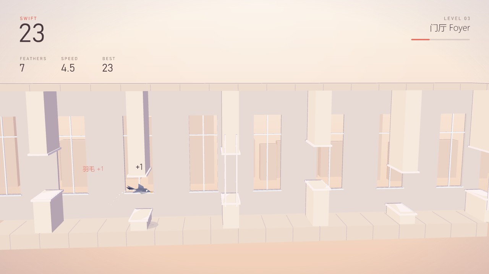</div>
              <div class="ly" data-swap="38.95">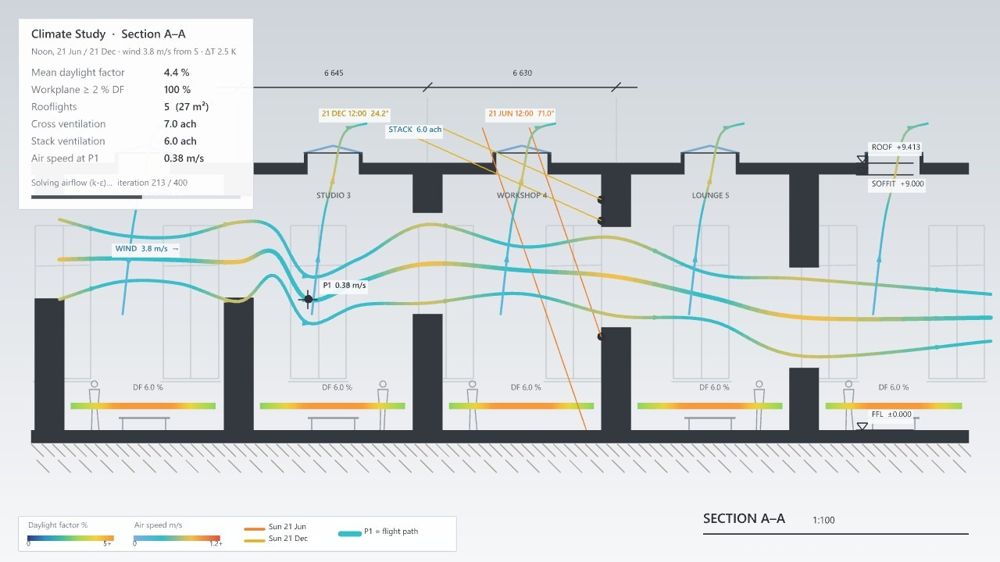</div>
            </div>
            <div class="flash" style="left:80px;top:170px;width:800px;height:450px" data-flash="38.9"></div>
            <div class="key" style="left:432px;top:343px" data-key="38.3"><b>`</b><span>老板键</span></div>
            <p class="a side gp">6 | SECTION</p>
            <p class="a side gt">Swift 雨燕</p>
            <p class="a side gdesc">按空格扇翅，穿过房屋剖面里的开口。</p>
            <p class="a side glab">画面</p>
            <p class="a side gstate play" data-off="38.9">游戏中</p>
            <p class="a side gstate boss" data-in="38.95" data-dy="8" data-d=".35">老板模式：住宅剖面的日照与通风分析</p>
            <p class="a side gtime"><b>53</b><span>分钟</span></p>
            <p class="a side gtime-note">含两个老板画面重做</p>
          </div>
        </div>

        <!-- S5 · same workflow -->
        <div class="scene" data-scene="41,49">
          <p class="a eb" data-in="41.2">docs/game-workflow.md</p>
          <p class="a h" data-in="41.35">每个游戏都走同一套流程</p>
          <p class="a sub" data-in="41.6">从 VoxStack 开始固定下来，写成文档，后面每个新游戏照着走。</p>
          <div class="node" style="left:80px" data-in="41.7" data-lit="42.2"><span class="nn">01</span><span class="nt">方案</span><span class="nd">Rhino 里做原型截图，出图文网页</span></div>
          <div class="node" style="left:270px" data-in="41.85" data-lit="43.0"><span class="nn">02</span><span class="nt">规则引擎</span><span class="nd">不依赖 Rhino 的核心，加单元测试</span></div>
          <div class="node" style="left:460px" data-in="42.0" data-lit="43.8"><span class="nn">03</span><span class="nt">Rhino 端</span><span class="nd">视口绘制、组件、老板画面</span></div>
          <div class="node" style="left:650px" data-in="42.15" data-lit="44.6"><span class="nn">04</span><span class="nt">真实按键实测</span><span class="nd">只在 Rhino 在前台时发键</span></div>
          <div class="node" style="left:840px" data-in="42.3" data-lit="45.4"><span class="nn">05</span><span class="nt">Codex 画图标</span><span class="nd">Claude 写功能说明，本机 Codex 出图</span></div>
          <div class="node" style="left:1030px" data-in="42.45" data-lit="46.2"><span class="nn">06</span><span class="nt">文档与计时</span><span class="nd">README、报告、开发用时</span></div>
          <div class="a flowline" data-in="42.0" data-dy="0"></div>
          <div class="a flowfill" id="flowFill"></div>
          <div class="a dot" id="flowDot"></div>
          <p class="a ctitle" style="left:80px;top:478px" data-in="46.4">从想法到能玩，用了多少分钟</p>
          <div class="brow" style="left:80px;top:504px"><span class="bl" style="width:230px">VoxStack</span><i class="bar" style="width:520px;background:var(--s-teal)" data-grow="46.6"></i><b class="bv" data-count="73" data-t0="46.6" data-t1="47.4">73</b></div>
          <div class="brow" style="left:80px;top:542px"><span class="bl" style="width:230px">Serpentine</span><i class="bar" style="width:264px;background:var(--s-teal)" data-grow="46.85"></i><b class="bv" data-count="37" data-t0="46.85" data-t1="47.65">37</b></div>
          <div class="brow" style="left:80px;top:580px"><span class="bl" style="width:230px">Rebound + Inkline（两个）</span><i class="bar" style="width:214px;background:var(--s-teal)" data-grow="47.1"></i><b class="bv" data-count="30" data-t0="47.1" data-t1="47.9">30</b></div>
          <div class="brow" style="left:80px;top:618px"><span class="bl" style="width:230px">Swift</span><i class="bar" style="width:207px;background:var(--s-teal)" data-grow="47.35"></i><b class="bv" data-count="29" data-t0="47.35" data-t1="48.15">29</b></div>
          <p class="a cap" style="left:900px;top:520px;width:300px" data-in="47.6">共用框架（老板键、倒计时、画面风格、最高分）攒齐之后，新游戏只写自己的规则和画面。</p>
        </div>

        <!-- S6 · restyle -->
        <div class="scene" data-scene="49,55">
          <p class="a eb" data-in="49.2">11.01 23:39 · 用户试玩后</p>
          <p class="a quote" data-in="49.35">“太难看了，玩着很难受。”</p>
          <p class="a sub" style="top:150px;width:1120px" data-in="49.6">第一版是深蓝底、霓虹网格、饱和色小球。两个游戏全部重做成极简独立游戏的样子：粉彩天空、三色平涂、软投影、不加框的 HUD。</p>
          <div class="vp" style="left:280px;top:238px;width:720px;height:405px" data-in="49.9">
            <div class="ly">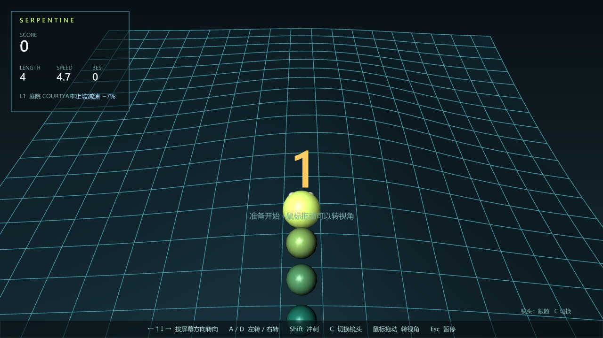<span class="chip r">之前</span></div>
            <div class="ly" id="wipeAfter" style="clip-path:inset(0 100% 0 0)"><span class="chip l">之后</span></div>
            <i class="divider" id="wipeLine"></i>
          </div>
          <p class="a cap center" style="top:658px" data-in="52.8">这套风格写进 docs/visual-style.md，后面四个游戏都用它；老板画面保持正经的分析图样子。</p>
        </div>

        <!-- S7 · iteration rounds -->
        <div class="scene" data-scene="55,62">
          <p class="a eb" data-in="55.2">11.03 · 第二到第四轮</p>
          <p class="a h" data-in="55.35">边玩边改</p>
          <p class="a sub" data-in="55.6">用户试玩后提意见，Claude 改代码、关掉 Rhino 重新编译，再用真实鼠标键盘测一遍。</p>
          <div class="item" style="top:240px" data-in="55.9"><b>开局变简单，后面逐渐变难</b><span>下落速度、蛇速、开口宽度都从慢的开始</span></div>
          <div class="item" style="top:328px" data-in="56.3"><b>道具按次数失效，不按时间</b><span>Rebound 的增益打几次就没了</span></div>
          <div class="item" style="top:416px" data-in="56.7"><b>贪吃蛇只留两种视角</b><span>转向以蛇头为准；老板画面改成景观总平面</span></div>
          <div class="item" style="top:504px" data-in="57.1"><b>体素 gumball 固定在右下角</b><span>VoxStack 拖动圆环转积木，在 4K 屏上实测</span></div>
          <div class="vp" style="left:640px;top:240px;width:560px;height:315px" data-in="56.2"><div class="ly">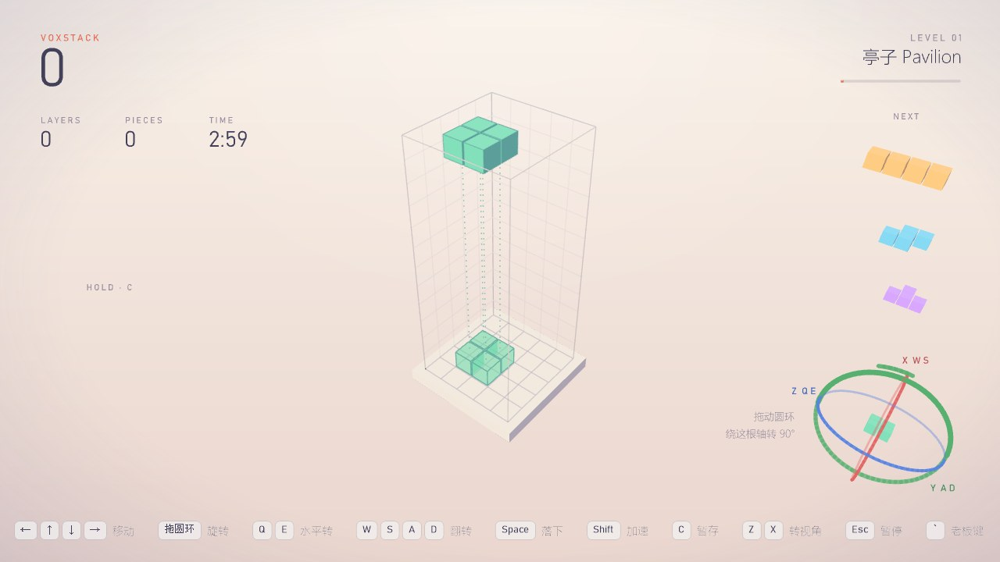</div></div>
          <p class="a cap" style="left:640px;top:566px" data-in="56.6">右下角那个三色圆环就是 gumball</p>
          <div class="stat" style="left:80px;top:618px" data-in="58.0"><b>26 + 27 + 40 分钟</b><span>三轮调整</span></div>
          <div class="stat" style="left:640px;top:618px" data-in="58.3"><b class="num" data-count="17" data-t0="58.3" data-t1="59.3">17</b><span>次为测试重启 Rhino</span></div>
        </div>

        <!-- S8 · release 1.0.0 -->
        <div class="scene" data-scene="62,70">
          <p class="a eb" data-in="62.2">11.04 · 发布 1.0.0</p>
          <p class="a h" data-in="62.35">上架之前，先让一群代理挑错</p>
          <p class="a sub" data-in="62.6">11 个方向的审查者，每条发现再从三个角度核查；确认的问题交给各自独立 worktree 里的修复代理。</p>
          <div class="big" style="left:80px" data-in="63.0"><b data-count="179" data-t0="63.0" data-t1="64.4">179</b><span>个审查与核查代理，在后台并行</span></div>
          <div class="big" style="left:470px" data-in="63.4"><b data-count="70" data-t0="63.4" data-t1="64.8">70</b><span>条确认的问题，全部修好</span></div>
          <div class="big" style="left:860px" data-in="63.8"><b data-count="12" data-t0="63.8" data-t1="65.0">12</b><span>页中英图文手册（PDF）</span></div>
          <div class="icn" style="left:80px;top:448px;width:120px;height:120px;background:#0D0D0F" data-in="65.2" data-s=".85" data-dy="0"></div>
          <p class="a" style="left:226px;top:452px;font-size:24px;font-weight:600" data-in="65.4">插件图标：Codex 画的体素鱼</p>
          <p class="a cap" style="left:226px;top:494px;width:560px" data-in="65.6">“摸鱼”的鱼。24 个组件的 24×24 工具栏图标也由 Codex 生成，Claude 只写每个组件做什么。</p>
          <div class="icn" style="left:880px;top:440px;width:320px;height:251px" data-in="65.8">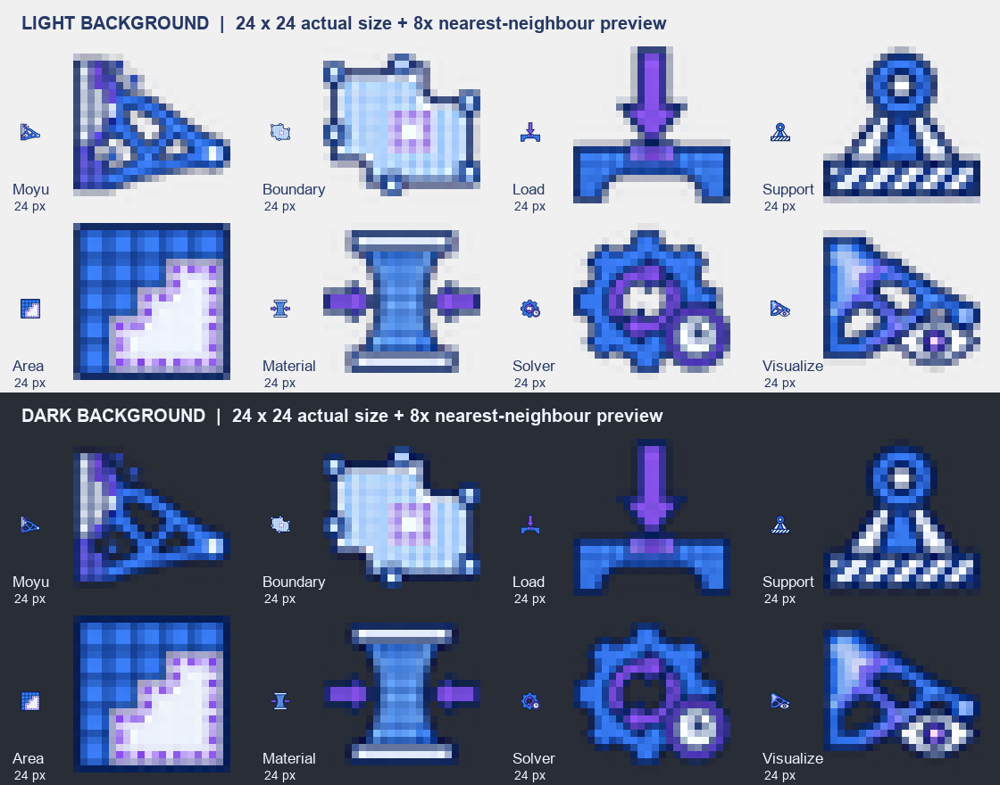</div>
          <p class="a" style="left:80px;top:612px;font-size:20px" data-in="66.4">上架 Rhino 包管理器（Yak）和 food4rhino</p>
          <p class="a cap" style="left:80px;top:646px" data-in="66.6">审查与发布 82 分钟 · 手册与上架文案 37 分钟</p>
        </div>

        <!-- S9 · release 1.0.1 -->
        <div class="scene" data-scene="70,78">
          <p class="a eb" data-in="70.2">11.07 – 11.08 · 发布 1.0.1</p>
          <p class="a h" data-in="70.35">再查一遍：Claude 和 Codex 交叉审查</p>
          <p class="a sub" data-in="70.6">Codex 6 路只读审查，Claude 10 个审查者（2 个真跑游戏核心做模糊测试）。每条发现都静态追踪一次、复现一次。</p>
          <p class="a ctitle" style="left:80px;top:246px" data-in="70.9">56 个确认的问题，全部修好 · 按部分</p>
          <div class="brow" style="left:80px;top:272px"><span class="bl" style="width:210px">公共：按键 / 组件</span><i class="bar" style="width:250px;background:var(--s-blue)" data-grow="71.0"></i><b class="bv" data-count="14" data-t0="71.0" data-t1="71.8">14</b></div>
          <div class="brow" style="left:80px;top:310px"><span class="bl" style="width:210px">VoxStack 叠楼</span><i class="bar" style="width:250px;background:var(--s-teal)" data-grow="71.2"></i><b class="bv" data-count="14" data-t0="71.2" data-t1="72.0">14</b></div>
          <div class="brow" style="left:80px;top:348px"><span class="bl" style="width:210px">Serpentine 蜿蜒</span><i class="bar" style="width:161px;background:var(--s-teal)" data-grow="71.4"></i><b class="bv" data-count="9" data-t0="71.4" data-t1="72.2">9</b></div>
          <div class="brow" style="left:80px;top:386px"><span class="bl" style="width:210px">拓扑优化</span><i class="bar" style="width:143px;background:var(--s-blue)" data-grow="71.6"></i><b class="bv" data-count="8" data-t0="71.6" data-t1="72.4">8</b></div>
          <div class="brow" style="left:80px;top:424px"><span class="bl" style="width:210px">Rebound 回弹</span><i class="bar" style="width:107px;background:var(--s-ochre)" data-grow="71.8"></i><b class="bv" data-count="6" data-t0="71.8" data-t1="72.6">6</b></div>
          <div class="brow" style="left:80px;top:462px"><span class="bl" style="width:210px">Swift 雨燕</span><i class="bar" style="width:89px;background:var(--s-teal)" data-grow="72.0"></i><b class="bv" data-count="5" data-t0="72.0" data-t1="72.8">5</b></div>
          <p class="a ctitle" style="left:80px;top:518px" data-in="72.9">谁找到的</p>
          <div class="stack" style="left:80px;top:544px;width:520px" data-grow="73.0"><i style="width:58.9%;background:var(--s-teal)"></i><i style="width:21.4%;background:var(--s-blue)"></i><i style="width:19.7%;background:var(--s-ochre)"></i></div>
          <div class="legend" style="left:80px;top:574px" data-in="73.4"><span><i style="background:var(--s-teal)"></i>只有 Claude 33</span><span><i style="background:var(--s-blue)"></i>两边都找到 12</span><span><i style="background:var(--s-ochre)"></i>只有 Codex 11</span></div>
          <div class="vp" style="left:680px;top:246px;width:520px;height:292px" data-in="71.4"><div class="ly">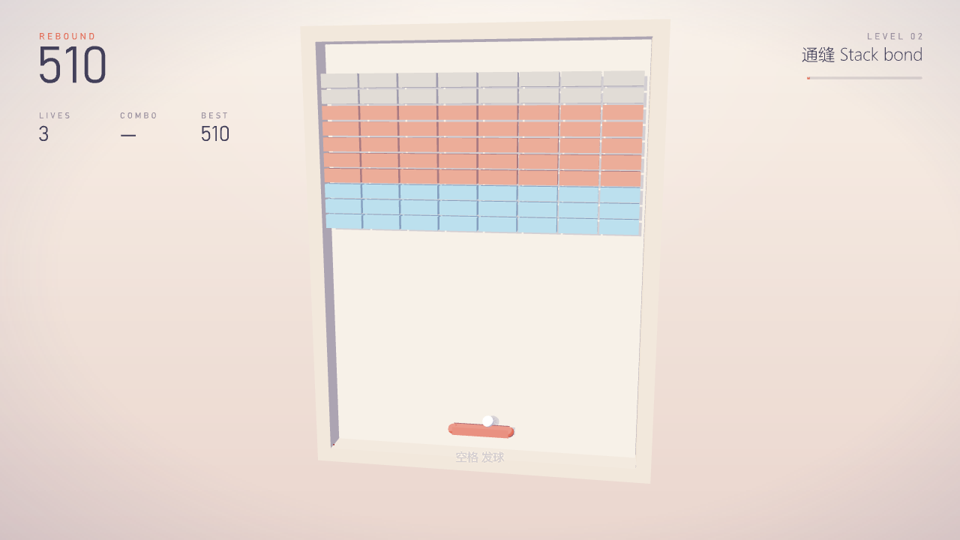</div></div>
          <p class="a cap" style="left:680px;top:552px;width:520px;font-size:16px" data-in="71.8">最严重的一条：Rebound 多球时，打掉最后一块砖的如果不是 0 号球，整局会中止。修好后模糊测试清墙 33,800 次，0 异常。</p>
          <div class="stat" style="left:80px;top:632px" data-in="74.4"><b>核心测试 <span class="num" style="font-size:inherit;color:inherit" data-from="375" data-count="442" data-t0="74.6" data-t1="75.8">442</span></b><span>项，原来 375</span></div>
          <div class="stat" style="left:680px;top:632px" data-in="74.8"><b>57 / 57</b><span>Rhino 场景测试</span></div>
        </div>

        <!-- S10 · time -->
        <div class="scene" data-scene="78,87">
          <p class="a eb" data-in="78.2">用时 · 来自 Claude Code 会话时间戳</p>
          <p class="a h" data-in="78.35">一共花了多少时间？</p>
          <p class="a ctitle" style="left:420px;top:158px" data-in="78.6">Claude 开发用时（分钟）</p>
          <div class="brow" style="left:80px;top:184px"><span class="bl" style="width:328px">拓扑优化 2D + 3D</span><i class="bar" style="width:330px;background:var(--s-teal)" data-grow="78.8"></i><b class="bv" data-count="114" data-t0="78.8" data-t1="79.6">114</b></div>
          <div class="brow" style="left:80px;top:226px"><span class="bl" style="width:328px">VoxStack 叠楼</span><i class="bar" style="width:241px;background:var(--s-teal)" data-grow="79.05"></i><b class="bv" data-count="83" data-t0="79.05" data-t1="79.85">83</b></div>
          <div class="brow" style="left:80px;top:268px"><span class="bl" style="width:328px">Serpentine 蜿蜒</span><i class="bar" style="width:203px;background:var(--s-teal)" data-grow="79.3"></i><b class="bv" data-count="70" data-t0="79.3" data-t1="80.1">70</b></div>
          <div class="brow" style="left:80px;top:310px"><span class="bl" style="width:328px">Rebound + Inkline</span><i class="bar" style="width:162px;background:var(--s-teal)" data-grow="79.55"></i><b class="bv" data-count="56" data-t0="79.55" data-t1="80.35">56</b></div>
          <div class="brow" style="left:80px;top:352px"><span class="bl" style="width:328px">Swift 雨燕 + 老板画面重做</span><i class="bar" style="width:154px;background:var(--s-teal)" data-grow="79.8"></i><b class="bv" data-count="53" data-t0="79.8" data-t1="80.6">53</b></div>
          <div class="brow" style="left:80px;top:394px"><span class="bl" style="width:328px">三轮调整</span><i class="bar" style="width:270px;background:var(--s-blue)" data-grow="80.05"></i><b class="bv" data-count="93" data-t0="80.05" data-t1="80.85">93</b></div>
          <div class="brow" style="left:80px;top:436px"><span class="bl" style="width:328px">1.0.0 审查与发布</span><i class="bar" style="width:238px;background:var(--s-ochre)" data-grow="80.3"></i><b class="bv" data-count="82" data-t0="80.3" data-t1="81.1">82</b></div>
          <div class="brow" style="left:80px;top:478px"><span class="bl" style="width:328px">图文手册与上架文案</span><i class="bar" style="width:107px;background:var(--s-ochre)" data-grow="80.55"></i><b class="bv" data-count="37" data-t0="80.55" data-t1="81.35">37</b></div>
          <div class="brow" style="left:80px;top:520px"><span class="bl" style="width:328px">1.0.1（含后台审查任务）</span><i class="bar" style="width:600px;background:var(--s-ochre2)" data-grow="80.8"></i><b class="bv" data-count="207" data-t0="80.8" data-t1="81.8">207</b></div>
          <div class="legend" style="left:420px;top:566px" data-in="81.6"><span><i style="background:var(--s-teal)"></i>功能开发</span><span><i style="background:var(--s-blue)"></i>迭代打磨</span><span><i style="background:var(--s-ochre)"></i>发布与文档</span><span><i style="background:var(--s-ochre2)"></i>含后台任务，口径不同</span></div>
          <div class="sum" style="left:80px" data-in="82.4"><b class="teal">约 9 小时 48 分</b><span>1.0.0：Claude 开发用时合计</span></div>
          <div class="sum" style="left:470px" data-in="82.8"><b class="ochre">3 小时 27 分</b><span>1.0.1：含后台审查和修复任务</span></div>
          <div class="sum" style="left:860px" data-in="83.2"><b class="muted">34 分钟</b><span>Rhino 自身故障，不计入</span></div>
        </div>

        <!-- S11 · end -->
        <div class="scene" data-scene="87,92" data-last>
          <div class="fish" style="left:584px;top:120px;width:112px;height:112px;border-radius:24px" data-in="87.3" data-s=".85" data-dy="0"></div>
          <p class="a center" style="top:262px;font-size:60px;font-weight:600" data-in="87.5">Moyu 1.0.1</p>
          <p class="a center" style="top:356px;font-size:22px" data-in="87.8">24 个组件 · 约 17,500 行插件代码 · 约 5,200 行测试 · 442 项核心测试</p>
          <p class="a center muted" style="top:400px;font-size:20px" data-in="88.1">几乎全部由 Claude Code 编写：一个用 AI 编程代理快速做 Rhino 插件的研究与教学项目</p>
          <p class="a center teal mono" style="top:500px;font-size:19px" data-in="88.6">Rhino 包管理器搜索 moyu · food4rhino · github.com/ChenmingHe0126/moyu</p>
        </div>

      </div>
    </div>
    <div class="controls">
      <button class="btn" id="playBtn" type="button" aria-label="播放">
        <svg viewBox="0 0 24 24" aria-hidden="true"><path id="playIcon" d="M8 5v14l11-7z"/></svg>
      </button>
      <span class="time" id="timeLbl">0:00 / 1:32</span>
      <div class="scrub">
        <input type="range" id="scrub" min="0" max="92" step="0.01" value="0" aria-label="播放进度">
        <div class="ticks" id="ticks"></div>
      </div>
      <button class="btn" id="fsBtn" type="button" aria-label="全屏">
        <svg viewBox="0 0 24 24" aria-hidden="true"><path d="M4 9V4h5v2H6v3H4zm11-5h5v5h-2V6h-3V4zM6 15v3h3v2H4v-5h2zm12 0h2v5h-5v-2h3v-3z"/></svg>
      </button>
    </div>
    <p class="narrow-hint">手机上建议横屏或点右下角全屏观看。</p>
  </section>

  <section class="board" aria-labelledby="boardTitle">
    <h2 id="boardTitle">分镜</h2>
    <ol class="chapters" id="chapters"></ol>
  </section>

  <p class="source">数据来源：<code>docs/dev-time-stats.md</code>（1.0.0 各部分的 Claude 开发用时，按每轮请求到最后一条回复累计，不含用户自己看结果和 Codex 出图的时间）、<code>docs/images/moyu-1.0.1-development-time.png</code>（1.0.1，含后台任务）、<code>docs/fifth-round-report.md</code>（1.0.1 审查）。代码行数是当前仓库 <code>src/Moyu</code> 与 <code>tests</code> 下 .cs 文件的原始行数。两次发布的计时口径不同，所以分开写。</p>
</main>

<script>
(() => {
  const TOTAL = 92;
  const CHAPTERS = [
    { t: 0,  title: '开场', desc: '一个 Grasshopper 插件的 8 天：拓扑优化、四个小游戏、两次发布。' },
    { t: 5,  title: '先做正事：拓扑优化', desc: '11.01 下午：2D 像素和 3D 体素的 SIMP 求解器，14 个组件，Claude 用时 1 小时 54 分。' },
    { t: 15, title: '然后，顺带摸鱼', desc: '四个小游戏，伪装成 Massing、Landscape、Facade、Section 四个研究面板。' },
    { t: 21, title: '老板键', desc: 'VoxStack、Serpentine、Rebound、Swift：按一下 ` 键，游戏立刻变成体块、景观、立面、剖面图。' },
    { t: 41, title: '同一套流程', desc: '方案 → 规则引擎和测试 → Rhino 端 → 真实按键实测 → Codex 画图标 → 文档与计时。做到能玩从 73 分钟降到 30 分钟左右。' },
    { t: 49, title: '画面重做', desc: '“太难看了，玩着很难受”：霓虹深蓝改成极简独立游戏风。' },
    { t: 55, title: '边玩边改', desc: '三轮调整：开局变简单、道具按次数失效、贪吃蛇两种视角、固定位置的 gumball。' },
    { t: 62, title: '发布 1.0.0', desc: '179 个代理审查，70 个问题修好；Codex 画插件图标；上架包管理器和 food4rhino。' },
    { t: 70, title: '发布 1.0.1', desc: 'Claude 和 Codex 交叉审查，56 个问题修好，核心测试 375 → 442 项。' },
    { t: 78, title: '一共花了多少时间', desc: '1.0.0 约 9 小时 48 分；1.0.1 约 3 小时 27 分（含后台任务）；Rhino 自身故障 34 分钟不计。' },
    { t: 87, title: '收尾', desc: '24 个组件、约 1.75 万行插件代码，几乎全部由 Claude Code 编写。' },
  ];

  const stage = document.getElementById('stage');
  const canvas = document.getElementById('canvas');
  const scrub = document.getElementById('scrub');
  const timeLbl = document.getElementById('timeLbl');
  const playBtn = document.getElementById('playBtn');
  const playIcon = document.getElementById('playIcon');
  const fsBtn = document.getElementById('fsBtn');
  const player = document.getElementById('player');

  /* ---- scale the 1280×720 canvas to the stage ---- */
  const fit = () => { canvas.style.transform = `scale(${stage.clientWidth / 1280})`; };
  new ResizeObserver(fit).observe(stage);
  fit();

  /* ---- one paused Web Animation per element, spanning the whole film ---- */
  const anims = [];
  const EASE = 'cubic-bezier(.22,.8,.26,1)';
  const off = t => Math.min(1, Math.max(0, t / TOTAL));
  function track(el, frames) {
    if (!el || !el.animate) return;
    const kf = [];
    if (frames[0][0] > 0) kf.push({ ...frames[0][1], offset: 0, easing: 'linear' });
    for (const [t, p, e] of frames) kf.push({ ...p, offset: off(t), easing: e || EASE });
    const last = frames[frames.length - 1];
    if (last[0] < TOTAL) kf.push({ ...last[1], offset: 1, easing: 'linear' });
    const a = el.animate(kf, { duration: TOTAL * 1000, fill: 'both' });
    a.pause();
    anims.push(a);
  }
  const V = (y = 0, x = 0, s = 1) => `translate(${x}px, ${y}px) scale(${s})`;
  const num = (v, d) => (v === undefined ? d : +v);

  document.querySelectorAll('[data-scene]').forEach(el => {
    const [a, b] = el.dataset.scene.split(',').map(Number);
    const f = [];
    if ('first' in el.dataset) f.push([0, { opacity: 1 }]);
    else f.push([a, { opacity: 0 }], [a + .5, { opacity: 1 }]);
    if (!('last' in el.dataset)) f.push([b - .45, { opacity: 1 }], [b, { opacity: 0 }]);
    track(el, f);
  });

  document.querySelectorAll('[data-in]').forEach(el => {
    const t = +el.dataset.in, d = num(el.dataset.d, .6);
    const hidden = V(num(el.dataset.dy, 16), num(el.dataset.dx, 0), num(el.dataset.s, 1));
    track(el, [[t, { opacity: 0, transform: hidden }], [t + d, { opacity: 1, transform: V() }]]);
  });

  document.querySelectorAll('[data-off]').forEach(el => {
    const t = +el.dataset.off;
    track(el, [[t, { opacity: 1 }], [t + .12, { opacity: 0 }]]);
  });

  document.querySelectorAll('[data-swap]').forEach(el => {
    const t = +el.dataset.swap;
    track(el, [[t, { opacity: 0 }], [t + .06, { opacity: 1 }]]);
  });

  document.querySelectorAll('[data-flash]').forEach(el => {
    const t = +el.dataset.flash;
    track(el, [[t, { opacity: 0 }], [t + .06, { opacity: 1 }], [t + .1, { opacity: 1 }], [t + .5, { opacity: 0 }]]);
  });

  document.querySelectorAll('[data-key]').forEach(el => {
    const t = +el.dataset.key;
    track(el, [
      [t, { opacity: 0, transform: V(14, 0, .7) }],
      [t + .35, { opacity: 1, transform: V() }],
      [t + .5, { opacity: 1, transform: V() }],
      [t + .6, { opacity: 1, transform: V(7, 0, .96) }],
      [t + .78, { opacity: 1, transform: V() }],
      [t + 1.2, { opacity: 1, transform: V() }],
      [t + 1.5, { opacity: 0, transform: V(-8) }],
    ]);
  });

  document.querySelectorAll('[data-grow]').forEach(el => {
    const t = +el.dataset.grow;
    track(el, [[t, { opacity: 0, transform: 'scaleX(0)' }], [t + .05, { opacity: 1, transform: 'scaleX(0)' }], [t + .8, { opacity: 1, transform: 'scaleX(1)' }]]);
  });

  document.querySelectorAll('[data-lit]').forEach(el => {
    const t = +el.dataset.lit;
    const cs = getComputedStyle(el);
    const from = { backgroundColor: cs.backgroundColor, color: cs.color, borderColor: cs.borderTopColor };
    track(el, [[t, from], [t + .35, { backgroundColor: 'rgb(40, 127, 125)', color: 'rgb(255, 255, 255)', borderColor: 'rgb(40, 127, 125)' }]]);
  });

  /* workflow dot and fill: move node to node, pausing as each one lights */
  const LIT = [42.2, 43.0, 43.8, 44.6, 45.4, 46.2], STEP = 190, SPAN = 950;
  const dotF = [[42.0, { opacity: 0, transform: 'translateX(0px)' }], [42.2, { opacity: 1, transform: 'translateX(0px)' }]];
  const fillF = [[42.2, { transform: 'scaleX(0)' }]];
  for (let i = 1; i < LIT.length; i++) {
    dotF.push([LIT[i] - .55, { opacity: 1, transform: `translateX(${(i - 1) * STEP}px)` }], [LIT[i], { opacity: 1, transform: `translateX(${i * STEP}px)` }]);
    fillF.push([LIT[i] - .55, { transform: `scaleX(${(i - 1) * STEP / SPAN})` }], [LIT[i], { transform: `scaleX(${i * STEP / SPAN})` }]);
  }
  track(document.getElementById('flowDot'), dotF);
  track(document.getElementById('flowFill'), fillF);

  /* before / after wipe */
  const WIPE = 'cubic-bezier(.65,0,.35,1)';
  track(document.getElementById('wipeAfter'), [[50.8, { clipPath: 'inset(0 100% 0 0)' }, WIPE], [52.4, { clipPath: 'inset(0 0% 0 0)' }]]);
  track(document.getElementById('wipeLine'), [
    [50.6, { opacity: 0, transform: 'translateX(0px)' }],
    [50.8, { opacity: 1, transform: 'translateX(0px)' }, WIPE],
    [52.4, { opacity: 1, transform: 'translateX(720px)' }],
    [52.7, { opacity: 0, transform: 'translateX(720px)' }],
  ]);

  /* counters */
  const counters = [...document.querySelectorAll('[data-count]')].map(el => ({
    el, from: num(el.dataset.from, 0), to: +el.dataset.count, t0: +el.dataset.t0, t1: +el.dataset.t1, last: null,
  }));
  function setCounters(t) {
    for (const c of counters) {
      const p = Math.min(1, Math.max(0, (t - c.t0) / (c.t1 - c.t0)));
      const v = Math.round(c.from + (c.to - c.from) * (1 - Math.pow(1 - p, 3)));
      if (v !== c.last) { c.el.textContent = v.toLocaleString('en-US'); c.last = v; }
    }
  }

  /* ---- chapters list + ticks ---- */
  const list = document.getElementById('chapters');
  const ticks = document.getElementById('ticks');
  const fmt = s => `${Math.floor(s / 60)}:${String(Math.floor(s % 60)).padStart(2, '0')}`;
  const chBtns = CHAPTERS.map(ch => {
    const li = document.createElement('li');
    const b = document.createElement('button');
    b.type = 'button';
    b.innerHTML = `<span class="ts">${fmt(ch.t)}</span><span class="ct"></span><span class="cd"></span>`;
    b.querySelector('.ct').textContent = ch.title;
    b.querySelector('.cd').textContent = ch.desc;
    b.addEventListener('click', () => { seek(ch.t + .01); play(); });
    li.appendChild(b); list.appendChild(li);
    if (ch.t > 0) {
      const i = document.createElement('i');
      i.style.left = `calc(7px + (100% - 14px) * ${ch.t / TOTAL} - 1px)`;
      ticks.appendChild(i);
    }
    return b;
  });

  /* ---- clock ---- */
  let t = 0, playing = false, lastNow = 0, curCh = -1;
  const ICON_PLAY = 'M8 5v14l11-7z', ICON_PAUSE = 'M7 5h4v14H7zm6 0h4v14h-4z', ICON_REPLAY = 'M12 5V2L7 6l5 4V7a5 5 0 1 1-5 5H5a7 7 0 1 0 7-7z';

  function render() {
    const ms = t * 1000;
    for (const a of anims) a.currentTime = ms;
    setCounters(t);
    scrub.value = t;
    scrub.style.setProperty('--p', `${(t / TOTAL) * 100}%`);
    timeLbl.textContent = `${fmt(t)} / ${fmt(TOTAL)}`;
    let ch = 0;
    CHAPTERS.forEach((c, i) => { if (t >= c.t) ch = i; });
    if (ch !== curCh) {
      chBtns.forEach((b, i) => b.setAttribute('aria-current', i === ch ? 'true' : 'false'));
      curCh = ch;
    }
  }
  function updateBtn() {
    const ended = !playing && t >= TOTAL;
    playIcon.setAttribute('d', playing ? ICON_PAUSE : ended ? ICON_REPLAY : ICON_PLAY);
    playBtn.setAttribute('aria-label', playing ? '暂停' : ended ? '重播' : '播放');
  }
  function loop(now) {
    if (!playing) return;
    t += Math.min((now - lastNow) / 1000, .1);
    lastNow = now;
    if (t >= TOTAL) { t = TOTAL; playing = false; }
    render();
    if (playing) requestAnimationFrame(loop); else updateBtn();
  }
  function play() {
    if (t >= TOTAL) t = 0;
    if (playing) return;
    playing = true; lastNow = performance.now();
    updateBtn(); requestAnimationFrame(loop);
  }
  function pause() { playing = false; updateBtn(); }
  function toggle() { playing ? pause() : play(); }
  function seek(s) { t = Math.min(TOTAL, Math.max(0, s)); render(); updateBtn(); }

  playBtn.addEventListener('click', toggle);
  stage.addEventListener('click', toggle);
  stage.addEventListener('keydown', e => { if (e.key === ' ' || e.key === 'Enter') { e.preventDefault(); toggle(); } });

  let resume = false;
  scrub.addEventListener('pointerdown', () => { resume = playing; pause(); });
  scrub.addEventListener('input', () => seek(+scrub.value));
  scrub.addEventListener('change', () => { if (resume) play(); resume = false; });

  document.addEventListener('keydown', e => {
    const tag = (e.target.tagName || '').toLowerCase();
    if (tag === 'input' || tag === 'button' || e.target === stage) return;
    if (e.key === ' ') { e.preventDefault(); toggle(); }
    else if (e.key === 'ArrowRight') seek(t + 5);
    else if (e.key === 'ArrowLeft') seek(t - 5);
  });

  fsBtn.addEventListener('click', () => {
    try {
      if (document.fullscreenElement) document.exitFullscreen().catch(() => {});
      else if (player.requestFullscreen) player.requestFullscreen().catch(() => {});
    } catch (_) { /* fullscreen not allowed here */ }
  });
  document.addEventListener('fullscreenchange', fit);

  render();
  const reduce = window.matchMedia && matchMedia('(prefers-reduced-motion: reduce)').matches;
  if (!reduce) play(); else updateBtn();
})();
</script>
